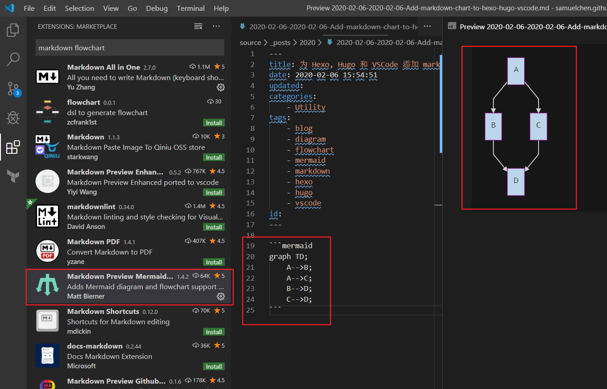

为 Hexo, Hugo 和 VSCode 添加 Markdown 流程图(Mermaid)支持
最近在写blog时想画流程图，但又因为可能会频繁修改而不想用图片。因此经过一番搜寻，发现了 mermaid
这个工具，支持用 markdown 撰写 流程图，时序图，甘特图，类图 等各种（简直神器）。
最让人高兴的是，Hexo（博客）, Hugo（网站） 以及 VSCode 都有插件或者方法可以支持。
以下就分别介绍如何在VSCode, Hexo 以及 Hugo 中安装设置来支持 mermaid.
VSCode
在 VSCode 中安装插件 Markdown Preview Mermaid Support，
就可以在编辑时实时预览 markdown 中的 mermaid 图形了，图形编写使用 ``` 包围，并以 mermaid作为语言标签。
例如（：
1 | ` ` `mermaid |
如图所示：

Hexo
Hexo 默认是不支持 mermaid 的，需要添加插件支持，在你的 Hexo Blog 目录下，输入命令：
1 | npm install --save hexo-filter-mermaid-diagrams |
此外，如果使用的主题支持mermaid，需要在所用主题的 _config.yml 中开启 mermaid 支持：
1 | # Mermaid (markdwon to flow chart, seq chart, class chart ...) |
*请稍等一段时间，以下代码会变为SVG流程图*
graph TD;
A-->B;
A-->C;
B-->D;
C-->D;
给 Hexo 主题添加 memaid 支持
最简单的办法，利用mermaid官方CDN，直接在 ${blog}\themes\tranquilpeak\layout_partial\script.ejs
中修改，文件最后增加两行如下
1 | <script src="https://unpkg.com/mermaid@8.4.6/dist/mermaid.min.js"></script> |
如果希望这个主题能支持更多配置，可以在主题的 _config.yml 中增加 mermaid 配置：
1 | # Mermaid (markdwon to flow chart, seq chart, class chart ...) |
然后在 ${blog}\themes\tranquilpeak\layout\_partial\script.ejs 中修改，文件最后增加：
1 | <% if (theme.mermaid.enable) { %> |
其中 theme.mermaid.enable theme.mermaid.theme 就是你增加的主题配置选项，具体
详见 mermaid 官方文档。
最后，可以将 mermaid.min.js 放到主题的js目录 ${blog}\themes\tranquilpeak\source\assets\js\ 下，
再使用如下技巧，当 CDN 出问题时，可以使用本地文件。
1 | <!-- if CDN fails, use local file --> |
Hugo
to be written
理论上和 Hexo 类似，待写
— END —